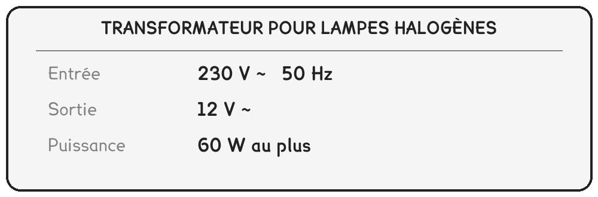
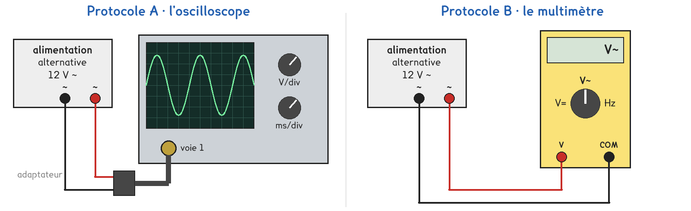
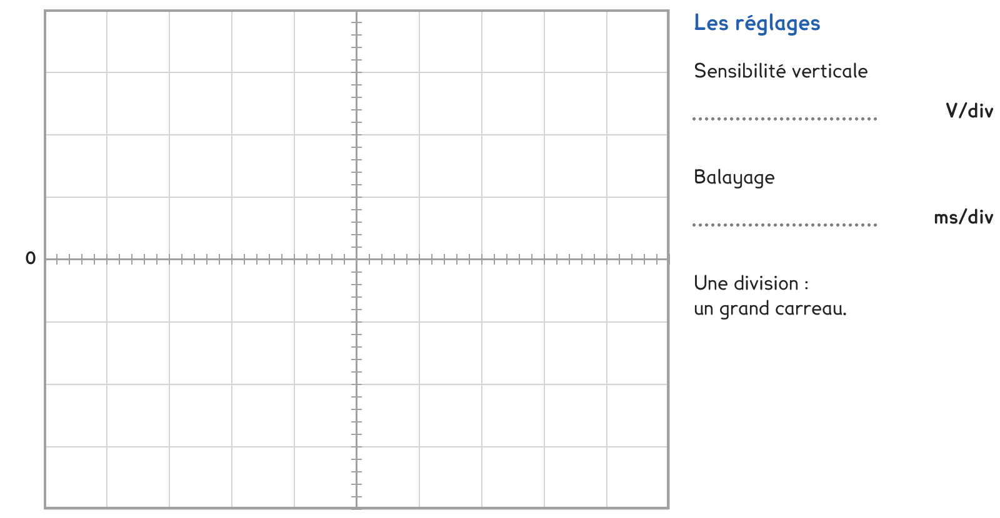

2de Bac Pro · toutes spécialités · TP commun 2DE-02
Quand la plaque annonce 12 V ~, que vaut la tension au plus haut ?
3 figures
Sujet. Dans le salon, une lampe halogène basse tension est branchée sur un petit transformateur. Sa plaque annonce une sortie de 12 V ~. Mais une tension alternative change de valeur sans arrêt.

Problématique : quand la plaque annonce 12 V ~, que vaut la tension au plus haut ?
Au laboratoire, une alimentation alternative de 12 V ~ remplace le transformateur.
Au bureau, le professeur branche un voltmètre, en position continu, sur un générateur qui tourne très lentement. Observer l’affichage pendant trente secondes.
a) Compléter ce que l’on observe.
Entourer, ou écrire la valeur.
| Ce qu’on observe | Réponse |
|---|---|
| La valeur affichée | reste la même · change |
| Elle passe par zéro, puis devient négative | oui · non |
| Durée d’un aller-retour complet, au chronomètre | T = ……………… s |
La fréquence f est le nombre d’allers-retours par seconde : f = 1 ÷ T, en hertz (Hz), avec T en secondes.
b) Calculer la fréquence du générateur du bureau.
f = 1 ÷ ……………… = ……………… Hz
c) Lire la plaque du transformateur, au début du sujet.
Le signe ~ veut dire, entourer : continu · alternatif
La fréquence de la prise de courant, en entrée : ……………… Hz
Une tension alternative se décrit par sa valeur maximale Umax, sa période T et sa valeur efficace Ueff, celle qu’écrit la plaque. Pour une tension sinusoïdale, Umax = Ueff × √2, soit environ Ueff × 1,41.
Deux protocoles. Le labo n’a qu’un ou deux oscilloscopes : la plupart des postes prennent B, puis passent à l’oscilloscope à tour de rôle.

Protocole A · l’oscilloscope. L’écran dessine la tension au cours du temps. On lit Umax et T en comptant les divisions, puis on calcule f et Ueff.
Protocole B · le multimètre. En position V~, il affiche Ueff ; avec la fonction Hz, s’il l’a, la fréquence. On calcule Umax.
d) Compléter le tableau pour comparer les deux protocoles.
Écrire les grandeurs : Umax, Ueff, T, f.
| Protocole A | Protocole B | |
|---|---|---|
| Ce qu’on lit sur l’appareil | …………………………… | …………………………… |
| Ce qu’on calcule | …………………………… | …………………………… |
| On voit la forme de la tension | oui · non | oui · non |
Le choix se fait maintenant, avant de toucher au matériel.
e) Par quel protocole commencez-vous ? Justifier en une phrase. Le professeur peut vous imposer celui qui reste disponible.
Je commence par le protocole ……… parce que ………………………………………………………………
f) Avant de mesurer, faire une hypothèse. Au plus haut, la tension d’une plaque de 12 V ~ vaut, entourer :
moins de 12 V · 12 V exactement · plus de 12 V
Avant de commencer
Jamais le secteur sur l’oscilloscope ni sur le multimètre : on ne branche que la sortie 12 V ~ de l’alimentation du poste.
On câble alimentation éteinte, et on allume une fois le branchement vérifié.
Le multimètre se règle avant d’être branché : position V~, calibre 20 V ou plus.
g) Reporter la courbe vue à l’oscilloscope, carreau par carreau, et noter les réglages.

h) Relever vos valeurs, puis calculer les autres avec f = 1 ÷ T, T en secondes, et Umax = Ueff × 1,41. Écrire M sous une valeur mesurée, C sous une valeur calculée.
| Umax (V) | T (ms) | f (Hz) | Ueff (V) | |
|---|---|---|---|---|
| Valeur | ||||
| Mesurée ou calculée |
Détail des calculs :
i) Schématiser votre branchement avec les symboles normalisés : le générateur de tension alternative et le voltmètre. En A, le voltmètre devient la voie 1 de l’oscilloscope.
Le schéma se dessine sur la feuille du TP.
j) Comparer votre Ueff aux 12 V de la plaque, puis votre fréquence aux 50 Hz de la prise. Les écarts sont-ils petits ?
k) Un groupe qui a commencé par l’autre protocole trouve-t-il le même Umax ? Votre hypothèse de la question f est-elle confirmée ?
l) Répondre à la problématique en deux phrases.
Ce que ce TP a établi, et qui vaut pour toute tension sinusoïdale :
À RETENIR
Une tension alternative sinusoïdale change sans arrêt de valeur et de signe. On la décrit par sa période T, en secondes, sa fréquence f = 1 ÷ T, en hertz, et sa valeur maximale Umax.
Le multimètre en position V~ affiche la valeur efficace Ueff : c’est elle qu’écrit une plaque. Umax = Ueff × √2, donc la tension monte plus haut que ce qu’annonce la plaque.
La prise de courant délivre 230 V efficaces à 50 Hz.
La prise délivre 230 V efficaces. Entourer sa tension au plus haut : 230 V · 325 V · 460 V
Pourquoi ne la branche-t-on jamais sur l’oscilloscope du labo ?
TP commun de physique-chimie, toutes spécialités. Le travail se fait sur la feuille du TP : cette page en est la version à l'écran, sans les lignes à remplir. Rien n'est enregistré.